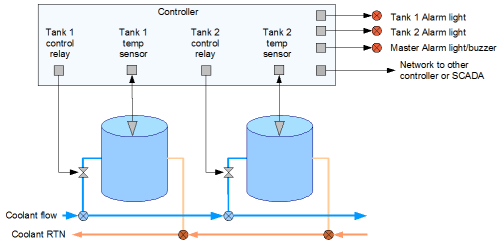

Designing systems for Industrial Automation or electronics control are a very different kettle of fish from designing for your standard business system, in many ways it’s a lot easier but there is a very close linkage with the hardware which needs to be taken in to account and most importantly a need to design for total reliability (including fail-safe options). I can deliver a complete range of services in this area including if required custom electronics circuit design and sourcing low cost manufacturing.
The easiest way to look at Industrial automation is to take a real life example, such as a very simple winery with a few cooling tanks which we want to keep at a constant temperature. We will only show 2 tanks but normally the PLC would control more, possibly even regulating the coolant pump to ensure an even system pressure.

In the above simple scenario each tank would require a temperature sensor and an electrically operated valve. When the temperature is above an upper setpoint we open the valve and let the coolant in to cool the tank, when the temperature drops below the lower setpoint the valve is closed, thus the temperature of the tank can never exceed the setpoint. The software program you would write would simply need to go around a loop reading the temperature sensor and switching the valve control relay on or off. A few more tanks we simply repeat the above in a loop.. Lets face it, a Doddle!
The big temptation for a technical person coming from a PC programming background into an industrial area is always the same, something along the lines of “I could knock up a program to do that in a few minutes if you used a PC”. Yes, while it is possible to control industrial systems such as above using a PC it is not desirable for several reasons:
- A PC by itself does not have the input and output (IO) capability to interface to real world industrial devices (a single RS-232 port or a USB port will not get you very far with a 4-20mA temperature sensor and a 240VAC operated valve!) therefore third party cards or interface boxes also need to be purchased to allow the PC to interact with the real world.
- A PC is completely overkill for the average industrial control situation such as above where programs tend to be very small and run in simple tight loop reacting to real-time events. Even reading a hundred sensors and controlling a hundred pumps your PC would be idling 99.999..% of the time – But it could show some pretty pictures while it was doing it though!
- Reliability is the number one priority in an industrial application, PC’s are not designed for dusty and (electrically) noisy environments and have just too many fans and exposed circuitry to fall fowl of dust and moisture. Lets face it we will probably want the system to run for several years without any downtime.
- A PC’s Power requirement is a dozen times that of a dedicated controller and you would need a UPS device to keep the power supply inside tolerances and prevent power outage corruptions.
- The fastest reboot time for a PC is several seconds (yes I know your new laptop takes a minutes even to get to the login screen but a few seconds is possible using embedded flash and stripped down operating systems) this may not be good enough in the real world.
- Software is another matter entirely, the phrase “familiarity breeds contempt” is never truer than when a PC programmer is asked to write a control system, I have heard of a situation where a PC was wired to control an production line but after the third blue screen of death in the same week it was ripped out. Another one was replaced as it could not reliably react when a 30mS pulse was used as an input (the developer in question even soldered a capacitor in parallel with the sensor to try and extend the pulse!) The problem he missed was even with a simple programming loop the programmer (Who had written some nice desktop applications in his time) forgot that the average PC is doing another dozen or so tasks. While he thought he was polling an IO port the PC was off indexing the disk or whatever they do. Even using a single tasking OS such as DOS (which some X86 based PLC’s still use) you have to be aware of such things as device drivers and other TSR’s and interrupts that may catch you out. You can get around a lot of problems with more electronics in the interface but why complicate things!
Some of the above are fairly arbitrary, PC’s are cheap who cares if it’s multi-core CPU is idling for 99.99999…% of the time in my non-critical process. There are of course exceptions to the Don’t use a PC rule.
Where a PC does come in useful in a factory or production space is in the Human Machine Interface (or HMI as in the actual factory touchscreen receival system I designed for Indevin above) where all the different control systems are brought back to a graphical interface, allowing operators to immediately see and control very complex processes.

In this situation the PC simply acts as an Interface to your production systems or queries the states of whatever is controlling the plant and shows it graphically, likewise changes (such as taking a pump off-line) can be done at the click of a touchscreen button. A single PC system failure in these cases would not affect the operation of the controller or business system as you may have 2 or 3 stations and once the PC is brought back on-line it re-reads the master controller or database again as if nothing happened. On a larger scale, software of this type is used to monitor whole factory production areas and mostly referred to by the generic name of SCADA.
I personally find many SCADA HMI implementations horrible, with over-complicated and badly designed interfaces giving information the installer wants to see, not what the end-user of the system wants to see.
Contrary to what you may have heard SCADA systems are very simple often just reading and writing setpoints and registers to a few PLC’s and HMI’s. Reading and writing to the SCADA system from your production system is not difficult and can enhance the useability and automation of it greatly. Getting the information to do this from your SCADA maintainer should not be an obstacle, if they make it one then you really should be looking for another supplier as despite what they say you are the customer, and it is your data.
PLC, PLC.. so what’s a PLC
PLC stands for Programable Logic Controller and, (surprise surprise!) the heart of a PLC is actually a teeny-tiny off the shelf micro-processor, the only difference between the processor in your laptop is that the processor in the PLC is designed from the ground up to run a much simpler set of instructions, at a fraction of the speed, using a fraction of the power, and normally has built in memory and I/O. For these reasons the chip is sometimes also referred to as a micro-controller; You have several in front of you now controlling your keyboard, your mouse, and maybe even your digital watch (and when was the last time you re-booted your keyboard, mouse or watch!). A PLC simply adds the electronics around the micro-controller to electrically isolate the I/O ports to allow industry standard 5V 4-20mA, 24VDC or 240VAC connections. Importantly, the PLC exactly specifies the Input and Output ports so no ambiguity exists for the electrician who usually programs them.

A PLC does not have an operating system, it does some basic self tests then begins running it’s program immediately after power on, this also means the start up time can be measured in milliseconds and the timing to read and write the I/O ports are precisely known. The downside (for a normal programmer) is that the program you write has to work at a very low level using simple logic (AND, OR, NOT etc) and, special programming languages are often used to allow the electrical engineers who design and run factories to be able to program them.
The most common PLC programming language is called ladder logic which visually approximates the electrical symbols for switches and relays (coils) which any electrician can understand without knowing much about computers. Ladder logic is great for relays and switches but not so easy to understand when we begin to work with analog controls. Other PLC languages like Structured Text (ST) exist which are better suited to handling these, but are becoming outdated, and as PLC’s are pushed to do more complicated tasks they are usually replaced by more specialised systems programmed in a high level language such as C.
PLC’s are great for industrial control, they can be used as building blocks for individual systems in the factory and can easily grow by adding different IO module types and can all talk to each other or back to a SCADA system with the designer knowing that everything is tried and tested and will work reliably for years. If you change the design parameters of the factory you just download a new program into the PLC without any re-wiring, that is why if you go to any factory or production line in the world, ride up an elevator or go for a ride on a roller coaster you will see PLC’s doing their thing.
Great, I’ll use a PLC then..
The simple answer is Yes, if you use a PLC in your industrial process you will not go wrong, end of story. There is not really a ‘but’ with the last statement, however (which is like a nicer but!), sometimes even a PLC can be overkill.. Ask the question “Why don’t we find PLC’s everywhere?”.. after all just about everything electrical these days from the washing machine, the DVD player to the car engine management system runs a mini industrial application, (clothes in -> water in -> heat water -> add powder -> start motor -> reverse motor -> etc etc), the problem is that while spending $500 – $5000 on a PLC is fine for a factory production line it becomes a little to expensive when you need to control a $20 toaster or run the climate control system in your new Honda. To control these we need to go back to what makes a PLC tick and the answer is the micro-controller.
The Micro-Controller
There are about a dozen micro-controller types on the market and may other types made under licence, the top players in the micro-controller market are variants on the ARM, but even these are overkill and 8-bit 8051, PIC, STM8 or whatever are prevalent at the bottom end. Even the smallest derivatives of these micro-controllers have everything built in, including a few inputs and outputs, built-in flash program memory and RAM and can be bought for as little as US$0.10 each (an easy price to achieve when your making billions of them a year!).
So a PLC is basically a Micro-controller with industrial grade electronic components, an environmentally protected case, opto-isolated inputs, relay or buffered outputs, documented memory map, expansion, and a electrical engineer orientated development environment. But there is absolutely nothing stopping you from designing and building your own ‘PLC’ exactly tailored for your own particular process or application. Many millions of companies and individuals do this every day, however there are a lot of factors to consider before deciding this is a better route than a PLC, the (very) general rules of thumb are:-
Firstly, consider the size of the project. A micro-controller has a good amount of IO ports as standard, but once you get past about 40 input or output ports, complexity, development time, testing and circuit costs are going to rise. A PLC is of course built for expansion and can keep adding IO, like Lego, up to several hundred ports. Small micro-controller projects are very quick and simple to develop, in the example of the wine tanks above, development and testing of such a simple controller could be done inside a day and once designed a circuit board can be produced locally for under $100 each or in Asia in qty for under $20.
Secondly, developing for a micro-controller maybe more expensive than for a PLC (or should be, but I’ve seen examples of PLC’s that should have been commissioned in a day take weeks!) the reason being that you also need to design the electronics to interface to the outside world (e.g. buffered analogue inputs 4-20mA, 0-10V etc, optically isolated digital inputs, relay output, LCD screens, power supply, MODBUS, Ethernet interfaces, buttons etc) the more complex the circuit the more to design and test. With a PLC you just buy these off the shelf and they just work. However if your making two micro-controller based control units then the development costs are effectively halved, three or more and assuming you have the electronics know how then it becomes a no-brainer in favour of developing your own micro-controller. (Note you would always make a few additional units as spares for any real world application as you can never have enough spares.)

Thirdly, consider the geography of what you are trying to do. If all the systems are close together a single PLC with enough I/O ports would certainly be a logical choice; however, if you have a lot of remote systems to control, the cost of wiring the control signals may become prohibitive over having several customised small ones.
Fourthly, consider expansion, both these solutions can have there software upgraded in a matter of seconds with a down time of under a minute, but if you need to add more physical I/O to your custom micro-controller design later on and you havent designed for it, your circuit will need to go back to the drawing board. A PLC does not suffer this limitation and so if your requirements may change down the line get a PLC.
Fifthly, If you are designing devices to go into a non-industrial environment such as a home, an automobile, a shed in the middle of a field, or if your system needs to be battery powered or is controlling voltages under 24V then choose a custom micro-controller design.
Finally, Consider support. If your production line stops, then your business likely stops! While all Industrial control systems (including custom designed ones) are super-reliable they can and do fail. The electrician in your factory or production line will want to swap out any failing systems ASAP, so the decision is do you want to keep spares ready for this or are you happy to rely on a third parties stock control system and have replacements shipped in. The cost of keeping a replacement PLC will be a lot more than manufacturing a few extra custom units.
Like I said, there are many reasons and overriding factors such as what support your existing engineers can provide or the type of SCADA system you have can easily override any of the above, Taking the first two points as the most relevant we can roughly summarise this in a graph.
Finally
Just to complete the picture, there are situations you still want a micro-controller but you need to have either much greater speed than an off-the shelf one can provide or a lower cost.
For high speed processing an FPGA would be used, the top-end devices can process hundreds of signals at gigahertz speeds, at a penalty of more difficult design, programming and vastly higher costs. The other option, often used for mass produced consumer electronics is called ASIC’s, often used where cost is the absolute deciding factor and you are talking quantities above 100,000+
I have used FPGA’s but I doubt there is any market in New Zealand for these latter two.
Next page: Commercial PLC’s >>